Kapitel 8 2 andele
8.1 Konfidensinterval for 2 andele

Vi igen ser på MobilePay undersøgelsen hvor 31 ud af 100 brugte MobilePay, man har en 1 år gammel undersøgelse, hvor man havde spurgt 200 respondenter om de bruger MobilePay, af disse svarede 45, at de bruger Danske Banks app.
Vi så tidligere, hvordan vi udregner konfidensintervaller for andele. Vi fandt i den nye undersøgelse at mellem 0.23% og 0.41% i populationen med 95% sandsynlighed i dag bruger MobilPay.
Tilsvarende kan vi sige at andelen af MobilePay brugere i populationen med 95% sandsynlighed tidligere lå mellem 0.17% og 0.29%. Det kan være lidt svært af afgøre om forskellen er signifikant da vi af nedenstående grafiske præsentation kan se at der er et mindre overlap mellem de 2 konfidensintervaller.
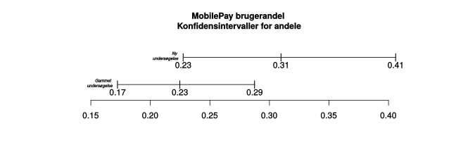
Hvis vi ønsker at undersøge om der er en signifikant forskel i andelen af brugere, kan vi se på konfidensintervallet for forskellen mellem andelene. Vi kan med 95% sikkerhed sige at forskellen i populationens andele er mellem -0.02% og 0.19%
Vi kan i software beregne dette, vi undlader formlen og udregningen her
Output fra fanen andele i FreestatDK er vist herunder, bemærk vi skriver kun i de hvide felter. Nederst til højre ses konfidensintervallet for forskelle i andele:
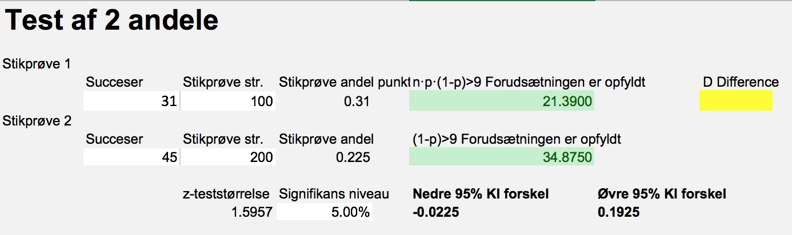
Vi sammenligner altså de 2 andele og betragter et konfidensinterval for differencen mellem disse. Hvis 0 er indeholdt i dette interval som her, er der ikke signifikant forskel på andelene. Det er altså en mulighed, at forskellen mellem MobilePay brugere før og nu er 0, hvilket er det samme som ingen forskel på andelene.
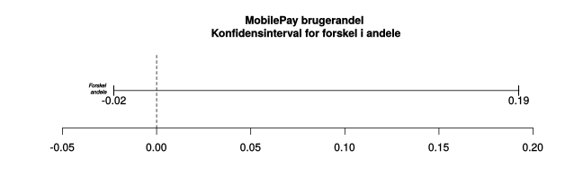
Vi kan altså ikke konkludere, at der er forskel på andelen af MobilePay brugere før og nu.
8.2 Spørgsmål 2 andele konfidensintervaller
Spørgsmål 2 andele utroskab.
Vi ser igen på data om utroskab, Fairs Affairs. Er der forskel på andelen af utro mænd og kvinder, bestem konfidensintervaller på 90% og 95% signifikansniveau?
Svar 2 andele utroskab.
## New names:
## * `` -> ...1Forskellen i andelene af utro kvinder og mænd ligger med 95% sikkerhed mellem -0.03 og 0.11, en signifikant forskel kan således ikke påvises ved 5% signifikans niveau. Det er dog tæt på, vi vil når vi begynder at teste, se at denne konklusion er tæt på at være niveaufølsom. Andelen af utro mænd, ligger på 27.27%, og andelen af kvinder er 22.86%.
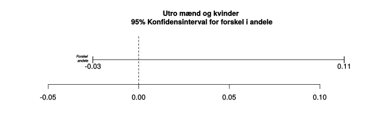
Benytter vi i stedet et 90% konfidensniveau, får vi Forskellen i andelene af utro kvinder og mænd ligger med 90% sikkerhed mellem -0.01 og 0.1, det er nu tættere på at forskellen er signifikant.
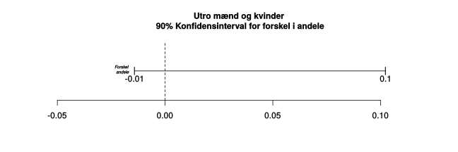 Spørgsmål 2 andele bankdata.
Bankdata. Er der forskel på andelen af mænd og kvinder i ledelse (manage), bestem konfidenintervaller på 5% og 1% signifikans niveau?
Svar 2 andele bankdata.
## New names:
## * `` -> ...1I populationen ligger forskellen i andelene af kvinder og mænd i ledelse med 95% sikkerhed mellem 0.18 og 0.3, der er altså signifikant forskel ved 5% signifikans niveau. Andelen af mænd i ledelse, ligger på 28.68% og andelen af kvinder i ledelse ligger på 4.63%.
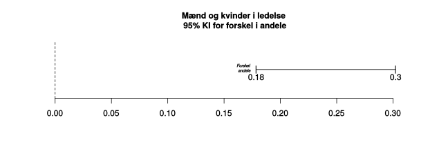
I populationen ligger forskellen i andelene af kvinder og mænd i ledelse med 99% sikkerhed mellem 0.16 og 0.32, der er altså signifikant forskel ved 1% signifikans niveau. Andelen af mænd i ledelse, ligger på 28.68% er altså helt sikkert større end andelen af kvinder i ledelse ligger på 4.63%.
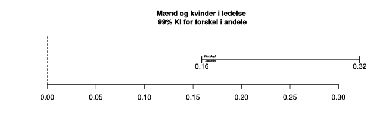8.3 Hypotesetests 2 andele
I den nye undersøgelse så vi at 31 ud af 100 bruger MobilePay, mod tidligere 45 ud af 200. Er der forskel på de 2 andele?
Da vi spørger om der er forskel svarer dette til operatoren \(\neq\). Vi kan skrive hypotesetestet som:
\[H_0: p_{nu}=p_{før}\]
\[H_1: p_{nu} \neq p_{før}\]
eller som det er formuleret i Freestat:
\[H_0:p_{nu}-p_{før}=D\]
\[H_1:p_{nu}-p_{før}\neq D\]
D står for difference, denne er som udgangspunkt 0. Hvis man skriver fx. 3 det gule felt, sættes D=3. Man tester så om en forskel er større end 3 procentpoint. Pas på husk altid at slette data i det gule felt, da man ellers kan nå den forkerte konklusion.
Da signifikanssandsynligheden/p-værdien 0.1105 er større end signifikansniveauet 5%, kan vi ikke forkaste nulhypotesen.
Vi konkluderer andelen af MobilePay brugere før og nu ikke er forskellig.
I nedenstående output fra Freestat når vi samme konklusion, her benytter vi testet med den tosidede alternativ hypotese hvor: \[p_{nu}=p_1\] \[p_{tidligere}=p_2\]
Bemærk ved tests af 2 andele, med ensidet alternativ hypotese, er det vigtigt at holde styr på, hvad man vælger som stikprøve 1 og stikprøve 2.
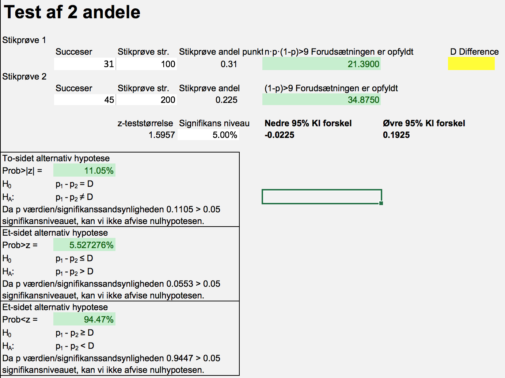
8.3.1 Eksempler
8.3.1.1 Utroskab og køn
Vi ser på igen på Fairs afairs datasættet.
Test om mænd er mere utro end kvinder?
Her skal vi først filtrere data på køn, for hhv. mænd og kvinder skal vi herefter bestemme andelen af utro.
## New names:
## * `` -> ...178 ud af ialt 286 mænd er utro, andelen af utro mænd i stikprøven er altså 0.2727.
72 ud af ialt 315 kvinder er utro, andelen af utro kvinder i stikprøven er altså 0.2286.
Der er forskel på andelene i stikprøverne, men betyder dette at der er en signifikant forskel på andelene i populationerne?
Hypoteserne bliver
\[H_0:p_{mand} \leq p_{kvinde}\] \[H_1:p_{mand}>p_{kvinde}\]
eller som det er formuleret i Freestat:
\[H_0:p_{mand}-p_{kvinde}\leq 0\] \[H_1:p_{mand}-p_{kvinde}>0\]
Vi har altså sat
\[p_{mand}=p_1\] \[p_{kvinde}=p_2\]
P-værdien bliver 0.1058, hvilket er større end 5%, vi kan altså ikke forkaste nulhypotesen. Vi konkluderer at mænd ikke er signifikant mere utro end kvinder i populationen. Vi har dog en p-værdi der er tæt på 10%, så det er ikke en meget sikker konklusion.
Nedenfor ses output fra Freestat:
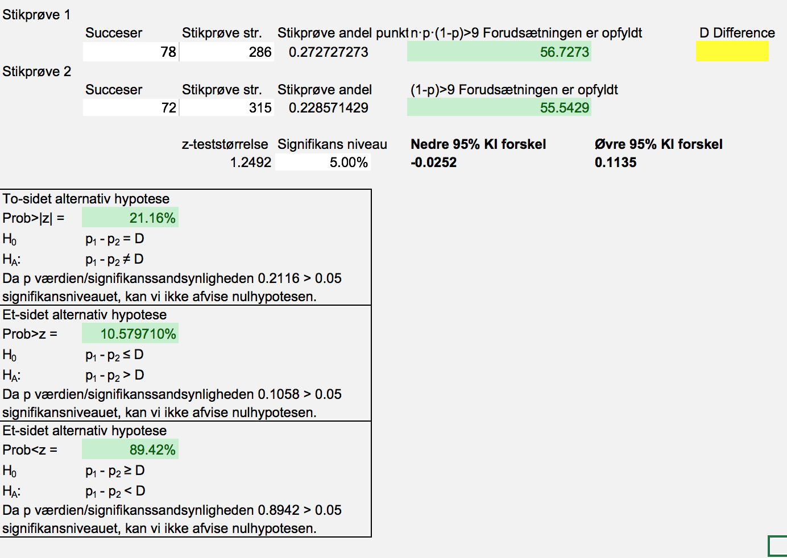
8.3.1.2 Utroskab og religiøsitet
## New names:
## * `` -> ...1Vi definerer nu meget religiøse, som folk med religiousness større end 3. Er mindre religiøse, mere utro end religiøse?
260 er meget religiøse, ud af disse er 46 utro.
341 er mindre religiøse, ud af disse er 104 utro.
Vor hypoteser bliver:
\[H_0:p_{religioese}\geq p_{mindre-religioese}\] \[H_0:p_{religioese}< p_{mindre-religioese}\]
Vi finder har en signifikanssandsynlighed på 0.000163, dette er en meget lille signifikanssandsynlighed, så vi forkaster klart nulhypotesen.
Mindre Religiøse personer er altså mere utro end religiøse.
8.4 Spørgsmål 2 andele
Spørgsmål 2 andele vandskader.
Et forsikringsselskab ønsker at undersøge om andelen af anmeldelser af oversvømmede kældre er steget i 2019 er steget i forhold til en lignende undersøgelse i 2015.
Man har i 2019 undersøgt 309 forsikringstagere med kælder, af disse har 43 anmeldt vandskader.
Tidligere i 2015 har man konstateret at i en stikprøve på 350 forsikringstagere, havde 35 Beskadigede kældre.
1. Er der forskel på andelen af anmeldte skader?
2. Er forudsætningerne for testet opfyldt?
3. Er antallet af anmeldte skader steget fra 2015 til 2019?
4. Er antallet af anmeldte skader steget fra 2015 til 2019, hvis vi tester på 10% signifikansniveau?
Svar 2 andele vandskader.
1. Er der forskel på andelen af anmeldte skader?
Vi opstiller hypoteserne:
\[H_0:p_{2019}=p_{2015}\]
\[H_0:p_{2019}\neq p_{2015}\]
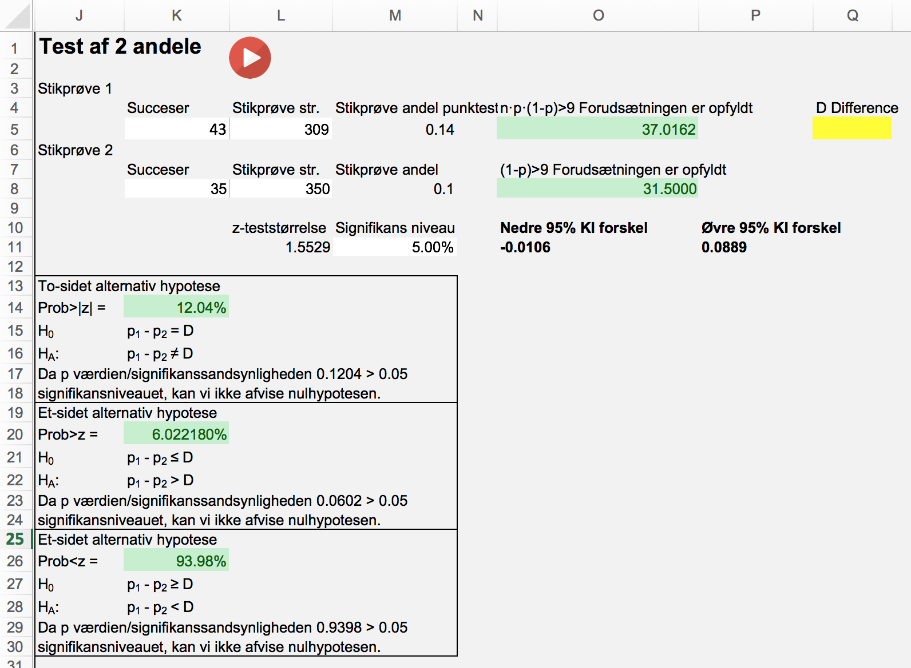
Da p værdien/signifikanssandsynligheden 0.1204 er større end 0.05 signifikansniveauet, kan vi ikke afvise nulhypotesen. Det vil sige andelen af anmeldte skader er ikke ændret fra 2014 til 2018. Bemærk vi tester to-sidet, da spørgsmålet er om andelen er ændret.
2. Er forudsætningerne for testet opfyldt?
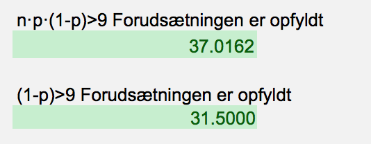
Da \(n\cdot\hat{p}\cdot(1-\hat{p})\) klart er større end 9 for begge stikprøver, er disse tilstrækkeligt store til at vi kan forudsætningerne er opfyldt.
3. Er antallet af anmeldte skader steget fra 2015 til 2019?
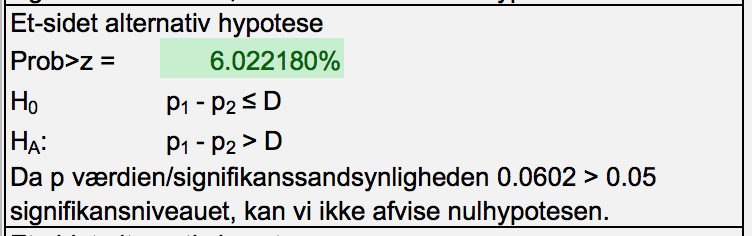
Bemærk vi tester med en-sidet alternativ hypotese, da spørgsmålet er om andelen er steget. Da vi vælger at sætte 2019 stikprøven som stikprøve 1 og 2015 stikprøven som stikprøve 2, bliver testet ensidet opad. Vi skal jo undersøge om \(p_{2019}\) er større end \(p_{2015}\).
Vi skal teste med ensidet alternativ hypotese opad. Hypoteserne i testet bliver derfor:
\[H_0:p_{2019}\leq p_{2015}\]
\[H_0:p_{2019}>p_{2015}\]
Da p værdien/signifikanssandsynligheden 0.0602 er større end 0.05 signifikansniveauet, kan vi ikke afvise nulhypotesen. Andelen af anmeldte skader er alså ikke steget. Dog er konklusionen niveaufølsom.
4. Er antallet af anmeldte skader steget fra 2015 til 2019, hvis vi tester på 10% signifikansniveau?
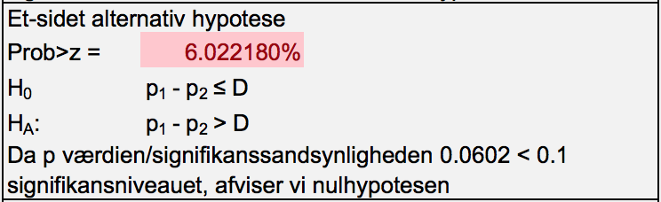
Vi skal fortsat teste med ensidet alternativ hypotese opad dog med 10% signifikansniveau. Hypoteserne i testet bliver derfor:
\[H_0:p_{2019}\leq p_{2015}\]
\[H_0:p_{2019}>p_{2015}\]
Da p værdien/signifikanssandsynligheden 0.0602 er mindre end 0.1 signifikansniveauet, afviser vi nulhypotesen. Andelen af anmeldte skader er altså steget fra 2015 til 2019
Spørgsmål 2016 8 Eksamen Statistik opgave 2 Finansøkonom.
A. 2016 8 Eksamen Statistik opgave 2 [toggle title=Spørgsmål] Nykøbing Bank er et mindre pengeinstitut med en stærk position i sit lokalområde. I Nykøbing Bank arbejder man med et rating-system af privatkunderne. Kunderne inddeles i risikogrupper efter deres risikoprofil på en skala fra 1 til 14. Et lavt antal point i rating-systemet betyder, at kunden har lav risiko for ikke at kunne overholde sine forpligtelser. I bedømmelsen af dine svar bliver der lagt vægt på, at du argumenterer for dine valg af løsningsmetoder, undersøger om eventuelle forudsætninger er opfyldt samt fortolker dine resultater.
Opgave 2 (30 %) Nykøbing Bank er bekymret for kundernes overtræk. I 2015 foretog banken en analyse, hvor man i en stikprøve på 75 kunder registrerede 26 kunder med overtræk. Spørgsmål 2.1 (10 %) Du bedes beregne et punktestimat og et 95 % konfidensinterval for andelen af bankens kunder, der havde overtræk i 2015. Spørgsmål 2.2 (10 %) Ved hjælp at en test på 5 % testniveau bedes du undersøge, om andelen af kunder med overtræk var større end 25 % i 2015. Spørgsmål 2.3 (10 %) Banken har en formodning om, at andelen af kunder med overtræk er faldet siden 2015. Anvend resultaterne i den vedlagte stikprøve fra maj 2016 til at teste på 5 % testniveau, om banken har ret i denne formodning.
Du finder hele opgaver i linket: 2016 8 Eksamen Statistik Opgave
2016 8 Eksamen Statistik dataSvar 2016 8 Eksamen Statistik opgave 2 Finansøkonom.
Spørgsmål 2016 8 Eksamen Statistik opgave 4 Finansøkonom.
Opgave 4 (10 %) Det er mange år siden bankens markedschef har beskæftiget sig med statistik. Han beder dig derfor forklare nogle begreber. Spørgsmål 4.1 (5 %) Forklar forskellen på et punktestimat og et konfidensinterval. Forklar endvidere formålet med at beregne et konfidensinterval. Spørgsmål 4.2 (5 %) Hvilken betydning har testniveauet for konklusionen i en hypotesetest? Hvilken betydning har stikprøvens størrelse for p-værdien, når der udarbejdes en hypotesetest?
Du finder hele opgaver i linket: 2016 8 Eksamen Statistik Opgave
Svar 2016 8 Eksamen Statistik opgave 4 Finansøkonom.
Spørgsmål 2017 3 Eksamen Statistik opgave 1 Finansøkonom.
Opgave 1 (50%)
Det første din chef vil have dig til at undersøge er den gennemsnitlige forsikringspræmie, og da det er målet at tilbyde prisbillige forsikringer til unge bilister, skal den gennemsnitlige forsikringspræmie være under kr. 6.000. Til det formål er der fortaget en stikprøveundersøgelse blandt Safe Cars kunder. Stikprøven er udtaget tilfældigt, og resultatet ses i datasættet i Excelarket.
1.1 (5%)
Undersøg om forsikringspræmierne for år 2016 er normalfordelte.
1.2 (10%)
Test på 5% niveau, hvorvidt Safe Car lever op til målet om at den gennemsnitlige forsikringspræmie er lavere end kr. 6.000.
Hvor sikre kan vi være på din konklusion?
1.3 (10%)
Beregn et 99% konfidensinterval for den gennemsnitlige forsikringspræmie for år 2016. Hvor anvendeligt er dette interval?
1.4 (5%)
Hvor stor skal stikprøven være, for at der maksimalt er kr. 100 mellem nedre og øvre grænse i 99% konfidensintervallet for den gennemsnitlige forsikringspræmie beregnet i 1.3?
Foruden kravet om lave forsikringspræmier har Safe Car har en politik om, at variansen for præmierne ikke må blive for stor. Der er således en målsætning om, at variansen for forsikringspræmierne skal være kr. 250.000.
1.5 (10%)
Test på 5% niveau hvorvidt den sande varians for forsikringspræmierne er lig med kr. 250.000. - Hvor sikre kan vi være på din konklusion?
Safe Car har også interne regler der siger, at andelen af kunder der har en forsikringspræmie over kr. 5800 maksimalt må udgøre en tredjedel.
1.6 (10%)
Beregn et 95% konfidensinterval for andelen af kunder der betaler mere end kr. 5800 i forsikringspræmie.
Hvor anvendeligt er dette interval?
Du finder hele opgaver i linket: 2017 3 Eksamen Statistik Opgave
Svar 2017 3 Eksamen Statistik opgave 1 Finansøkonom.
Spørgsmål 2017 3 Eksamen Statistik opgave 3 Finansøkonom.
Opgave 3 (20%) Hos Safe Car har man foruden fokus på billige forsikringspræmier også fokus på andelen af skader for forskellige aldersgrupper, og derfor har Safe Car for nylig lavet en analyse på baggrund af en tilfældigt udvalgt stikprøve på 175 personer blandt selskabets unge kunderne. Resultatet ses i dataarket under fane 2:
| Alder | Lille skade | Mellem skade | Stor skade | Total |
|---|---|---|---|---|
| 18-19 år | 15 | 20 | 35 | 70 |
| 20-21 år | 20 | 20 | 20 | 60 |
| 22-23 år | 15 | 15 | 15 | 45 |
| Total | 50 | 55 | 70 | 175 |
3.1 (10%)
Test på 5% niveau om andelen af personer som har lavet en stor skade er mindre end 65% for den yngste aldersgruppe.
Safe Car er ligeledes interesseret i at finde ud af, om der er forskel mellem aldersgrupper
3.2 (10%)
Test på 5% om andelen af personer, der laver en stor skade, er større blandt de 18-19 årige end blandt de 22-23 årige.
Du finder hele opgaver i linket: 2017 3 Eksamen Statistik Opgave
Svar 2017 3 Eksamen Statistik opgave 3 Finansøkonom.